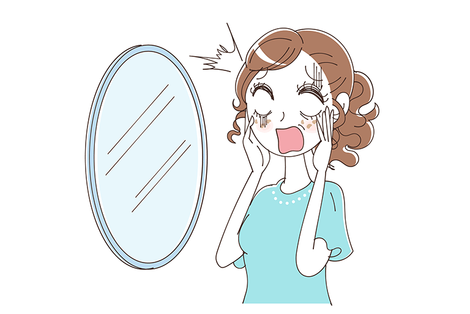
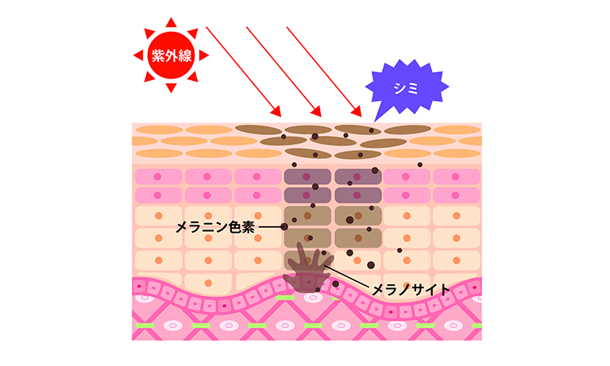
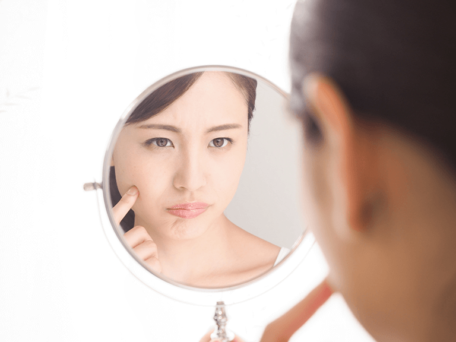
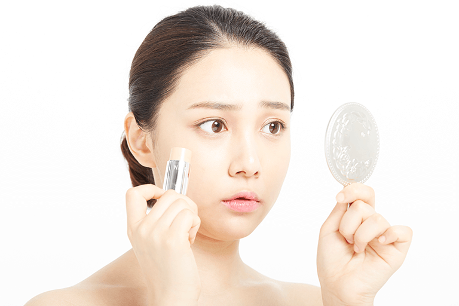
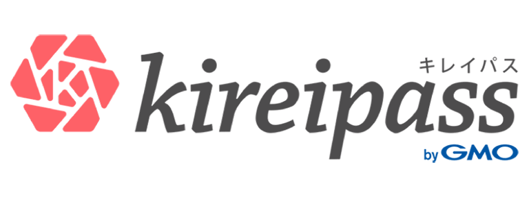

濃くなって目立ち始めたシミには、
美容医療の技術力を

シミが生まれる原因はなに？
それは、【紫外線× お肌の乱れ】です。
皮膚の表皮は「ケラチノサイト」と表皮の一番下の基底層にある「メラノサイト」などからできています。紫外線を浴びるとメラノサイト内でメラニンという色素が生成されます。

本来ならこのメラニンも、お肌のターンオーバーで剥がれ落ちるはずなのですが…
メラニンが過剰に作られ、ターンオーバーのサイクルが乱れて新陳代謝が滞るとシミになってしまう可能性が高くなります。
シミの原因は日差しだけじゃない！肌のターンオーバーの乱れが引き起こしてるかも!?
でも、大丈夫！
シミに適したケアをすれば、シミも消えるんです！
美容医療クリニックではシミに対する様々なメニューがあるのをご存知ですか？
しかも、すべて事前決済＆全額返金保証がついたメニューがあれば、安心してクリニックに行くことができますよね。
それが「キレイパス」です。
全額返金保証の「キレイパス」で、
今すぐチケットを検索する
お肌の悩みから、ぴったりなシミ治療
メニューを探してみよう！
シミ治療は10 種類以上の方法が！ピーリング作用でメラニンを剥がしたり、肌内部のシミのもとを還元して表面に出てくるのを予防したりと、効能はそれぞれ違ってきます。
＜最新の人気シミケアメニュー＞
・レーザー治療
・レーザートーニング
・水光注射
・ケミカルピーリング
・プラセンタ
・白玉点滴
・光治療
・フォトシルクプラス、フォトRF
・フォトフェイシャル、フォトフェイシャルM22
・ライムライト
「美白治療だけでこんなにあるの？」「選び方がわからない！」という方のために、最新の人気メニューをご紹介し ます 。
急に現れた部分的なシミには
レーザー治療がおすすめ

「頬に大きなシミが広がって、濃くなってきた」
「すっぴんになるとシミが気になる」
レーザー治療は、はっきりと目立つシミによく使われていることが多い治療法。
【レーザー治療とは】
深層部にできたメラニン細胞にレーザーを照射し、皮膚の深部にあるメラニン細胞だけを破壊する方法。
【メリット】
大きくてはっきりしたシミだけにアプローチするので、わかりやすく効果が見えやすい治療です。
【デメリット】
施術後はかさぶたができ、そのかさぶたが剥がれ落ちた後も赤みは少し残ります。この赤みは２～３ヶ月で消えていくそうです。赤身の出ない施術もありますので、不安な方は医師とのカウンセリングで相談しましょう。
シミの輪郭が見えるほど、はっきりと浮かび上がってきたシミに悩む方に選ばれていますが、薄いシミにはあまりオススメできません。
また、左右同じ場所にできたシミは肝斑の場合があり、医師との相談が必要となります。
全額返金保証の「キレイパス」で、
「レーザー治療」のチケットを検索
顔全体をワントーン明るい表情にしたいなら
フォトフェイシャル

「お肌全体が暗くて、シミがより目立つように感じてしまう」
「もっと肌全体を明るくしたい」
そんな方に好まれているのがフォトフェイシャル。
【フォトフェイシャルとは】
IPL（インテルス・パルス・ライト）と呼ばれる特殊な光を照射する治療法です。
【メリット】
通常のレーザーと違ってお肌に優しいので、炎症やかさぶたになることもほとんどありません。
【デメリット】
１回で消えるわけではありませんので、継続して通うことがオススメ。
シミの大きさや体質で効果に差がありますが、クリニックによって一緒にサプリメントも処方される場合があるので、シミ改善をサポートできます。
全額返金保証の「キレイパス」で、
「フォトフェイシャル」チケットを検索
お肌がくすんでるからシミっぽく見える…
そんな時はプラセンタ注射を
「全体がかさついていて、シミがさらに気になる」
「お肌全体のくすみをなんとかしたい」
お肌に潤いが欲しい。そんな時はプラセンタ注射がオススメ！
【プラセンタ注射とは】
プラセンタとは胎盤を原料としたもの。プラセンタは肌にハリを与え、透明感をアップすることができます。アンチエイジンを主とし、シミも薄く目立たなくすることができます。
【メリット】
シミケアだけでなく、透明感ある美肌も期待できることで人気があります！
【デメリット】
注射を使用するので、ちくっとした痛みも。小さな針跡が少し残りますが、お化粧で隠せる程度です。
全額返金保証の「キレイパス」で、
「プラセンタ注射」チケットを検索
全額返金保証のキレイパスで、
ぴったりな美容法を見つけよう！

今までありそうでなかった、美容医療のチケット購入サービス「キレイパス」 。
全額返金保証だけではない、キレイパスの特徴とは？
【キレイパスの特徴】
１：万が一施術に満足できなかった場合は、
安心の全額返金保証！
２：追加課金の心配なし！すべて事前決済
３：施術実績など、豊富で正確な情報を掲載！
ここまで揃っていれば、初めてのクリニックも怖くない！たくさんのチケットから、自分にあった美容方法を見つけましょう。
全額返金保証の「キレイパス」で、
今すぐチケットを検索する
記事内容に関して
１、効果は個人差があります
２、医師とよく話し合ってください
３、当社では責任を負いかねます